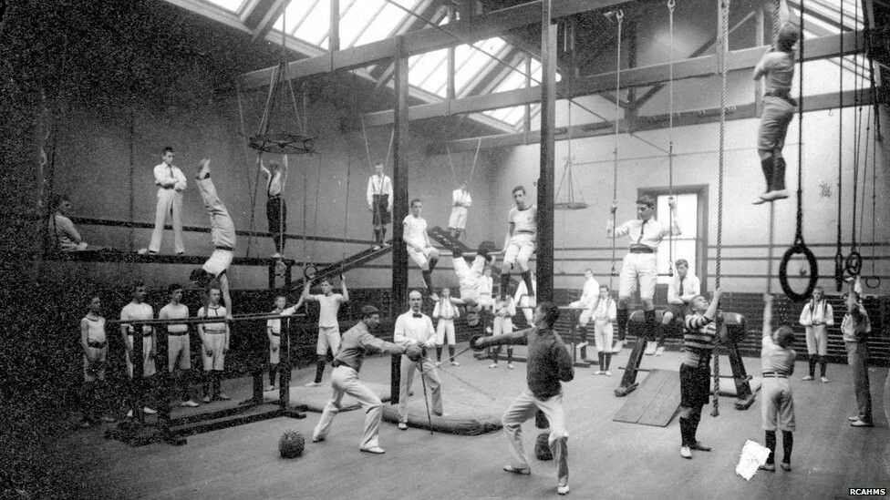
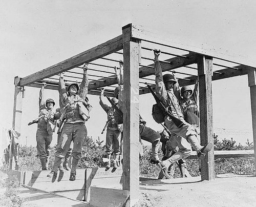

La Storia di Bora Bora Fitness Club
La storia della palestra oggi conosciuta come Bora Bora Fitness Club ha inizio nel lontano 1930 quando Alderano Villotti decise di lasciare per sempre l'Italia e andare a vivere nel paradiso terrestre di Bora Bora. Alderano era un grande esperto di fitness per la sua epoca, egli infatti si occupò personalmente dell'allenamento di alcuni soldati scelti durante la Prima guerra mondiale. In quel periodo sull'isola non era però presente alcun posto dove potersi allenare, Alderano decise quindi di costruire una palestra per poter trasmettere agli abitanti dell'isola la propria passione. La palestra inizialmente aveva pochi e semplici attrezzi, ma col passare del tempo l'interesse suscitato nella piccola popolazione di Bora Bora portò ad un ampliamento della struttura
Durante la Seconda guerra mondiale, Bora Bora ospitò una base statunitense comprensiva di 5.000 soldati e 9 navi. La palestra in quel periodo diventò un importante centro per l'allenamento dei soldati anche grazie all'esperienza di Alderano. Questo periodo portò a una grande evoluzione la strutturagrazie a tecnologie provenienti direttamente dagli Stati Uniti.
A livello sportivo, Bora Bora è, insieme con le vicine Huahine, Raiatea e Tahaa, una delle quattro isole tra le quali si svolge l'Hawaiki Nui Va'a, competizione internazionale di canoe polinesiane (va'a). Molti atleti si allenano qui, la palestra vanta molti iscritti vincitori di sta roba

Al giorno d'oggi la palestra è frequentata da molti abitanti dell'isola, ma anche molti turisti scelgono di frequntarla durante le loro vacanze attrezzatura all'avanguardia... cambiato nome in Bora Bora Fitness Club